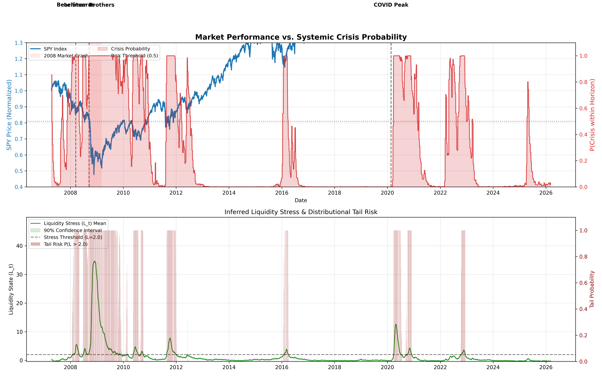
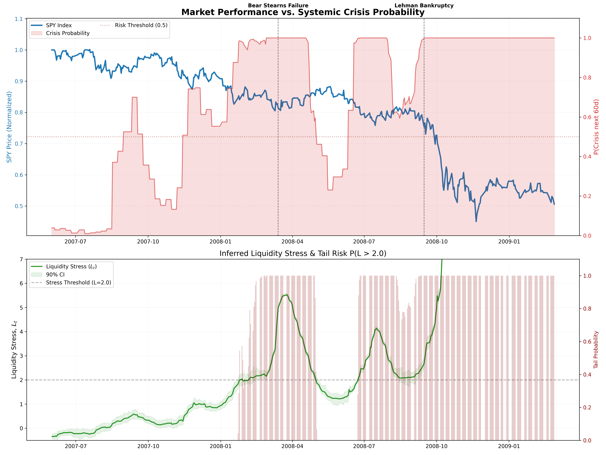
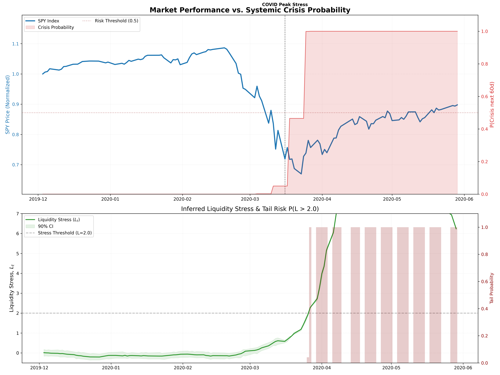
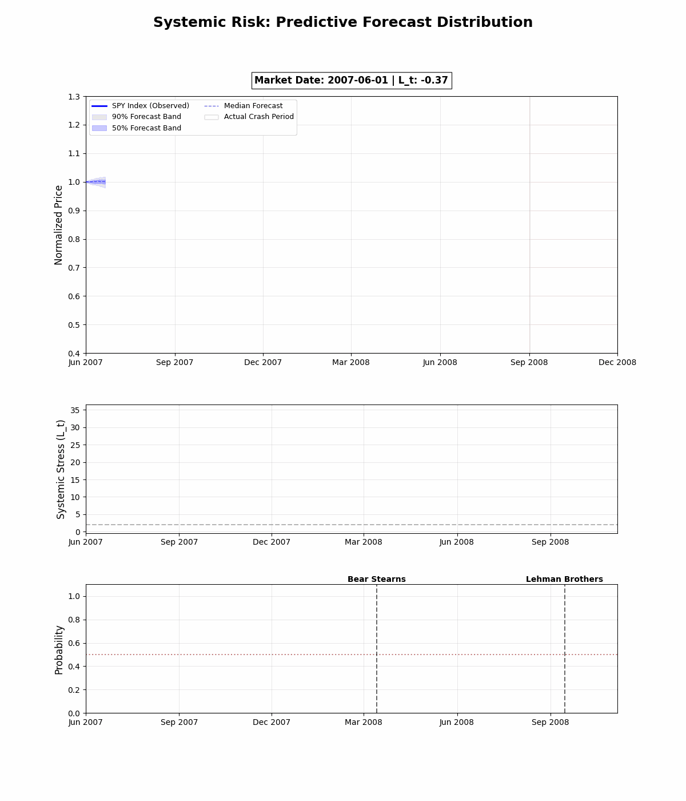

Latent Liquidity & Crisis Dashboard
Interactive crisis probability and latent-factor visualizer built from latent_liquidity_quant outputs.
Data source: results/crisis_res.npz converted to JSON. To regenerate: python3 experiments/visualize_crisis.py then re-run JSON export.
Time Window
Loading data...
Crisis Probability (next 60 days)
Liquidity Stress Lt with 90% CI
Latent Factors h, z
Gallery (pre-rendered outputs)

experiments/visualize_crisis.py



Reproduction
- Recompute crisis data:
python3 main.py predict - Regenerate static plot:
python3 experiments/visualize_crisis.py - Create animations:
python3 experiments/animate_crisis.py - Export JSON for this page: run conversion script to
assets/latent-liquidity/crisis_res.json